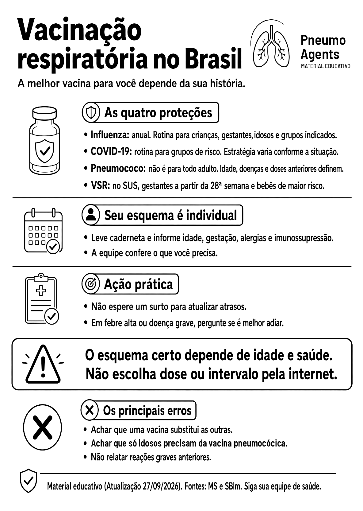

Vacinação respiratória no Brasil

Ler o texto do infográfico
As quatro proteções
- Influenza: anual. Rotina para crianças, gestantes, idosos e grupos indicados.
- COVID-19: rotina para grupos de risco. Estratégia varia conforme a situação.
- Pneumococo: não é para todo adulto. Idade, doenças e doses anteriores definem.
- VSR: no SUS, gestantes a partir da 28ª semana e bebês de maior risco.
Seu esquema é individual
- Leve caderneta e informe idade, gestação, alergias e imunossupressão.
- A equipe confere o que você precisa.
Ação prática
- Não espere um surto para atualizar atrasos.
- Em febre alta ou doença grave, pergunte se é melhor adiar.
O esquema certo depende de idade e saúde. Não escolha dose ou intervalo pela internet.
Os principais erros
- Achar que uma vacina substitui as outras.
- Achar que só idosos precisam da vacina pneumocócica.
- Não relatar reações graves anteriores.
Material educativo (atualização 27/09/2026). Fontes: MS e SBIm. Siga sua equipe de saúde.